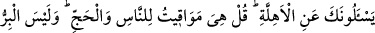
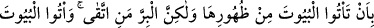
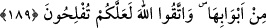

getirmek için yaratıldığına işâret ediliyor. Şu âyet bunun delîlidir: “Ben insanları ve
cinleri ancak bana ibâdet etsinler diye yarattım” (ez-Zâriyât, 51/56) Yâni mal ve
nefislerinin Allah (c.c.)’a aid olduğunu bilsinler ve yalnız Allah’ın emirleri
doğrultusunda kullansınlar diye...
Gaflete düşüp mallarınızı nefsânî isteklerinizin peşinde hırs, şehvet ve isrâf gibi bâtıl
yollarla yemeyin. Mallarınızı hak yolda; Allah’a itâate güç kazanarak kulluk görevinizi
yerine getirebilmek için yiyin.
Kulluğa yardımcı olsun diye yaratılan malların bir kısmını, gaflet içinde dört ayaklı
hayvanlar gibi yiyip günaha sebeb olan ve Allah’a isyan ettiren yollarda kullanarak
nefs-i emmârenizin önüne atmayın. Böyle yapanların kalacakları yer cehennemdir.
Velhâsıl siz bunu bilmiyorsunuz. et-Te’vîlâtü’n-Necmiyye’de böyle tefsir edilmiştir.
189. Sana, hilâl şeklinde yeni doğan ayları sorarlar. De ki: Onlar, insanlar ve
özellikle hac için vakit ölçüleridir. İyi davranış, asla evlere arkalarından gelip
girmeniz değildir. Lâkin iyi davranış, korunan (ve ölçülü giden) kimsenin
davranışıdır. Evlere kapılarından girin Allah’dan korkun, umulur ki kurtuluşa
erersiniz.
Ensârdan Muâz b. Cebel ile Sa’lebe b. Ganem (r.a.), Rasûlullah (s.a.)’a gelerek: “Ey
Allah’ın elçisi! Nedir şu ayın hali ki, önce iplik gibi incecik beliriyor, sonra içi dolarak
dolunay hâline geliyor. Sonra tekrar eksilip incelerek eski şekline dönüyor?” diye
sormuşlardı. Yüce Allah onlara cevap olarak “Sana hilâlleri soruyorlar” âyetini
indirdi.
Âyeti kerîmedeki “ehille” kelimesi “hilâl”in çoğuludur. Üçüncü geceye kadar
görülen ilk ay ışığına hilâl denir. Hilâl kelimesinin asıl anlamı, sesi yükseltmektir.
İnsanlar hilâli gördüklerinde seslerini yükselttikleri için ayın bu ilk görüntülerine hilâl
denilmiştir. Arapça’da yeni doğan çocuğun ilk bağırışını ve hacıların yüksek sesle
telbiye yapmalarını ifâde etmek için aynı kökten türemiş fiil kullanılır.
“Mevâkit”, “vakit” kökünden türemiş “mîkât” kelimesinin çoğuludur. Vakit ile
zaman ve müddet arasında şöyle bir fark vardır: Müddet, dünyânın başından sonuna
kadar bütün hareketidir. Zaman, müddetin geçmiş, gelecek ve şimdiki olmak üzere üçe
ayrılmış şeklidir. Vakit ise; herhangi bir iş için konulmuş zaman dilimidir. Aylar,
insanların kendileriyle ilgili işlerini yapmaları ve haccın belirli vakitlerdeki gereklerini
yerine getirmeleri için konulmuş vakit ölçüleridir.